Modify OpenXava code
You can modify the OpenXava code to adapt it to your needs, fix a bug, add a new feature, etc.Since v7.0
Dowload code from GitHub
First go to the OpenXava page in GitHub en copy the repository URL:
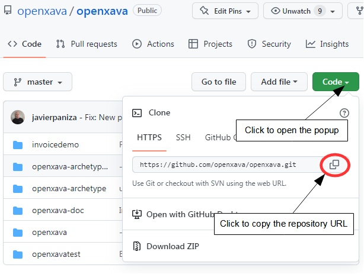Then open the Git perspective in OpenXava Studio, for that click on the button on right top part:
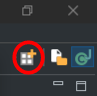In Git perspective click on Clone a Git repository:
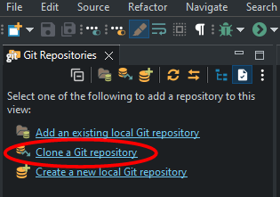Given that you have copied OpenXava repository the URI is automatically filled, just click on Next:
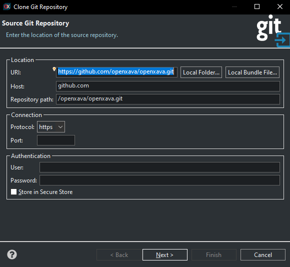It shows all the branches, just click on Next again:
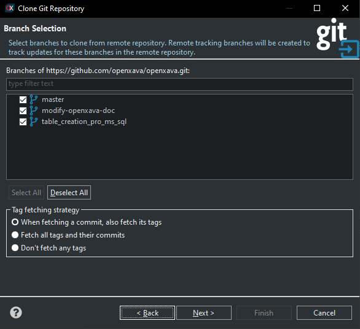Finally click on Finish:

Now be patient while the repository code is downloaded from GitHub:
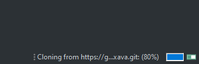After it you have the openxava repository listed in left side of OpenXava Studio:
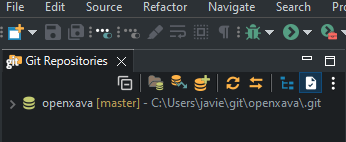Congratulation the OpenXava repository is downloaded in your computer and configured in OpenXava Studio. The next step to import the openxava project into your workspace.
Import openxava into workspace
First, go back to Java perspective, to that click on the corresponding button on top right side in OpenXava Studio:
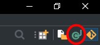To import the openxava project click on File > Import...:
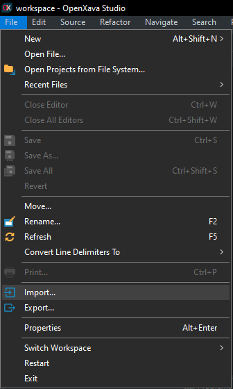Now select Git > Projects from Git and click on Next:
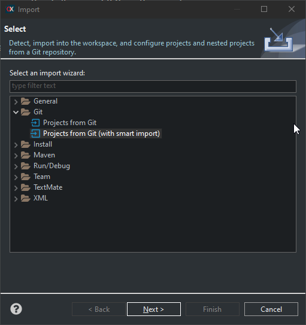Choose Existing local repository and click on Next:
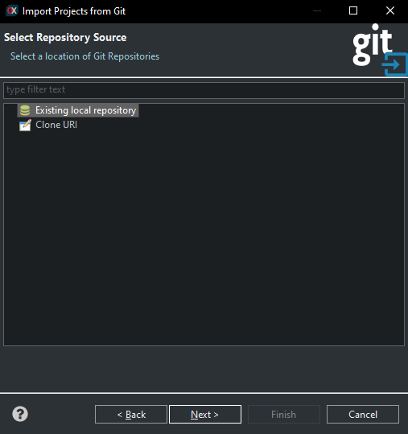Select the openxava repository and click on Next:
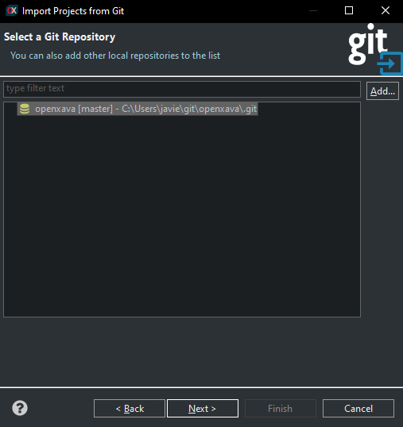Select the folder openxava and click on Next:
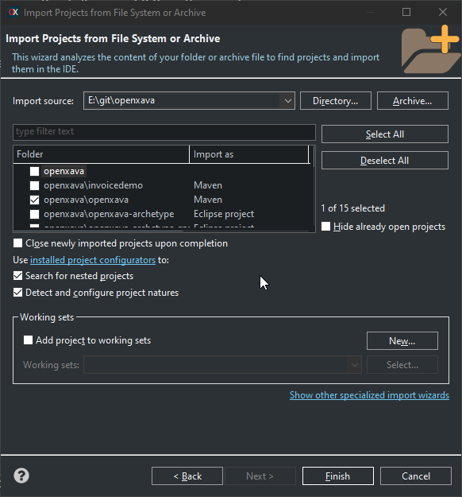Make sure openxava is checked in click on Finish:
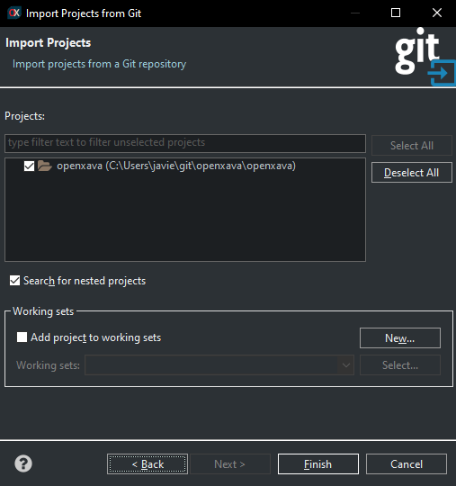Finally the openxava project with all its code is in your workspace.
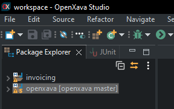Now you can modify the openxava code at your taste.
Modify OpenXava code
First, make sure that the version in openxava/pom.xml is a SNAPSHOT. Open the pom.xml inside the openxava project, and verify the version:
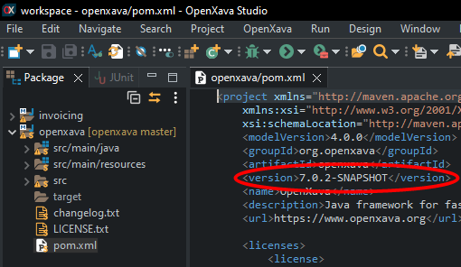If you're using the master branch surely the version will be an SNAPSHOT, if not modify it adding the -SNAPSHOT suffix. It means that is a working version, not with fixed features but ready to be modified.
Now, it's the moment to modify the code. For example, edit the NewAction.java code and add a print, like this:
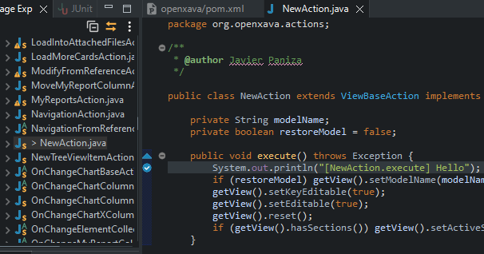Now make a mvn install on openxava, in this way:
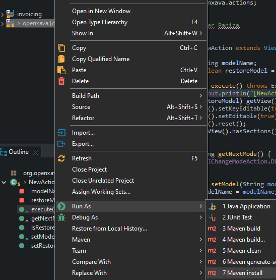This time it's not needed to do a mvn clean because we have just downloaded the code and target is empty, but if you get new code from GitHub (with a pull) you should do a mvn clean too.
Now, go to your project, edit the pom.xml and put the openxava.version property to the value of the OpenXava version you have in your workspace:

This is important, otherwise you project will not use the openxava you have modified, but the official version from Maven Central.
Now do a mvn clean on your project:
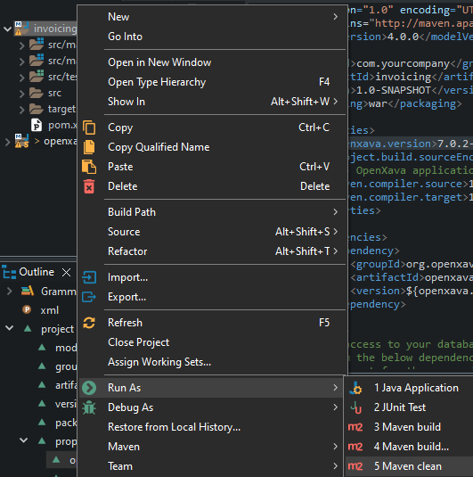And then a mvn install on your project:
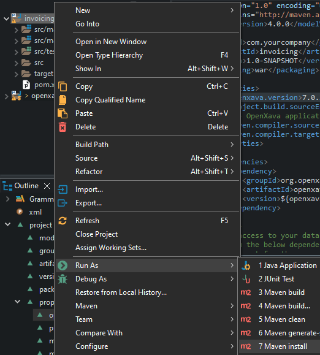Congrutalions! Your project is ready to run with your modified OpenXava. Try it.
Shorten modification cycle
The above steps are for the very first modification. From now on, the next modifications can be easy, just three steps:
- Modify openxava code.
- Do a mvn install on openxava.
- Do a mvn war:exploded in your project. For this you can use Run As > Build Maven ...
Even more, if you start your application in debug mode, clicking on the bug:
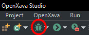In this way you can modify the code in openxava and see the result instantly, even without relaunching your application or reload the browser. Just like magic.
Branches
In the above example we have modified directly the master branch, not a problem at all because you have no rights to do a push against the OpenXava repository. However, you can make a more advanced use of branches. As a minimum, you should create a branch before doing any change and do the change in your own branch. After the change is complete and works nicely, you can merge the code with master.
If you want to contribute code to OpenXava, you should create an account in GitHub, then create a clone of the openxava repository in your account. Follow the above steps importing the code from your own repository instead of from openxava/openxava. In this way, you can create a branch, do a push, and create a PR against the original OpenXava repository, where it could be approved and included in OpenXava for the next official release.